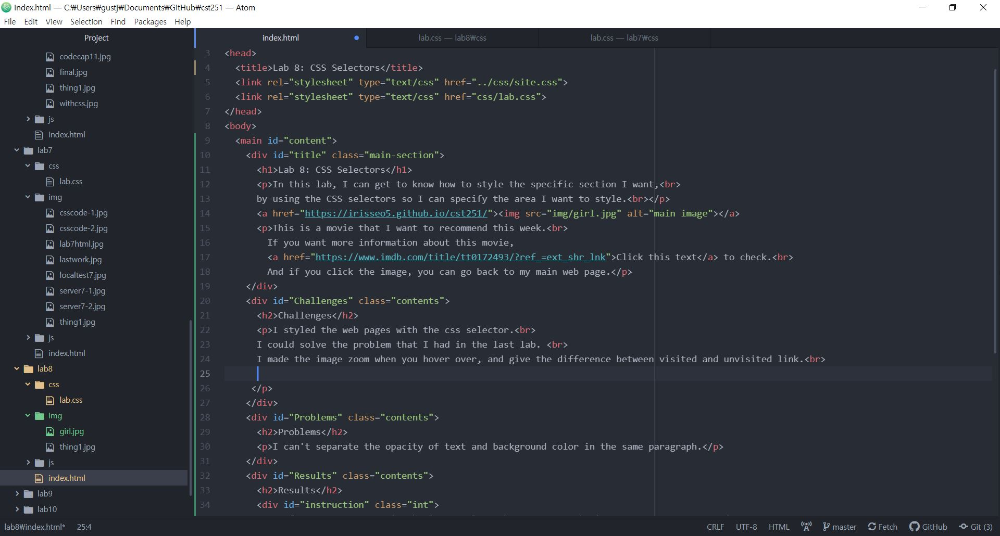
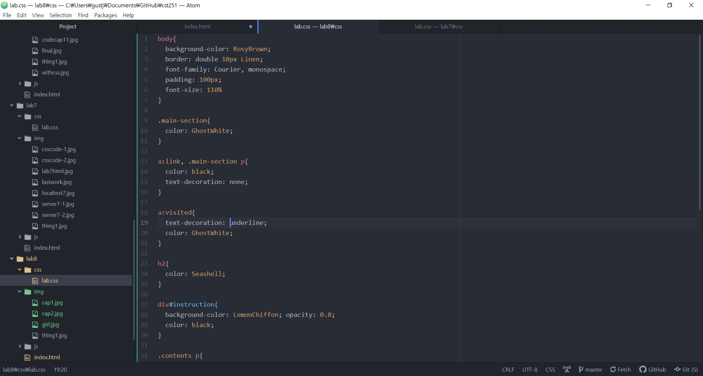
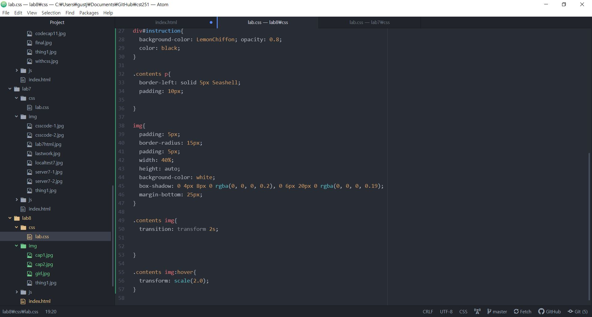
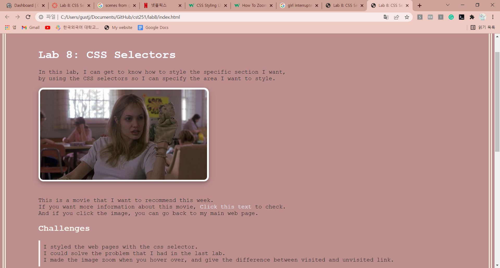

Lab 8: CSS Selectors
In this lab, I can get to know how to style the specific section I want,
by using the CSS selectors so I can specify the area I want to style.
This is a movie that I want to recommend this week.
If you want more information about this movie,
Click this text to check.
And if you click the image, you can go back to my main web page.
Challenges
I styled the web pages with the css selector.
I could solve the problem that I had in the last lab.
I made the image zoom when you hover over, and give the difference between visited and unvisited link.
Problems
I can't separate the opacity of text and background color in the same paragraph.
Results
If you want to zoom in the image, place the cursor on the image you want to zoom.
Here's my index html source code.
And this is my lab8 css source code from Atom

When I tested it locally, I can see my web page like this...
And Finally I uploaded to the server successfully!